REGGAE-OS
Screenshot quick guide
UI 0.7.2 · Sound bank 0.5 · Screens captured from the shared firmware at the FM-1’s native 240 × 240 resolution. This guide is readable on a phone and can be printed from your browser. Physical FM-1 operation and iPhone Safari have not been verified on devices.
Start here
- Open the emulator and tap its audio-start control. Play its virtual keys.
- On the instrument screen, ALGORITHM chooses track T1–T4; PRESETS chooses a sound. The four lower knobs match the four labels on the screen.
- Tap a section button (ENV, LFO, FX, SCL, EDIT, SAVE, ARP or SEQ); further separate taps cycle that section’s pages. Avoid rapid double taps when navigating.
- Tap HOME to get back to the instrument area. From instrument play, HOME cycles MIXER → CLOCK → instrument. Hold HOME for settings.
- MASTER controls output level. SELECT’s job is configurable in Settings → CONTROL; do not assume it always selects a page.
“K1–K4” means the four lower parameter knobs, from left to right. Turn an action knob to select an operation, then use OCT+ to confirm and OCT− to cancel when prompted. Settings use all four knobs to edit the same selected row. Blank knobs are intentionally unused.
Record a first loop: from instrument play, tap REC and play: the first note starts recording. Tap REC to finish the overdub. Select another track and repeat. PLAY stops. On the stopped STEP editor, REC instead arms step entry. Save the complete session through SAVE → PROJECT.
15 new chord types
Tap SCL to reach CHORD GARDEN. K3 chooses the chord, K4 the voicing. Try MAJ6, MIN7 or MIN9 on organ/piano; they are useful starting colours, not substitutes for offbeat articulation. Existing OFF, DIA3, DIA7, MAJ, MIN, DOM7, MAJ7, MIN7, SUS4 and POW remain available.
| Type | Example on C | Meaning |
|---|
| SUS2 | C D G | Open suspended sound |
| MAJ6 | C E G A | Warm major colour |
| MIN6 | C E♭ G A | Minor with a raised sixth |
| ADD9 | C E G D↑ | Major triad plus ninth |
| mADD9 | C E♭ G D↑ | Minor triad plus ninth |
| DOM9 | C E B♭ D↑ | Dominant ninth; fifth omitted |
| MAJ9 | C E B D↑ | Major ninth; fifth omitted |
| MIN9 | C E♭ B♭ D↑ | Minor ninth; fifth omitted |
| 7SUS4 | C F G B♭ | Suspended dominant seventh |
| DIM | C E♭ G♭ | Diminished triad |
| DIM7 | C E♭ G♭ B𝄫 | Diminished seventh; B𝄫 sounds as A |
| m7b5 | C E♭ G♭ B♭ | Half-diminished seventh |
| AUG | C E G♯ | Augmented triad |
| mMAJ7 | C E♭ G B | Minor-major seventh |
| 6/9 | C E A D↑ | Major sixth/ninth; fifth omitted |
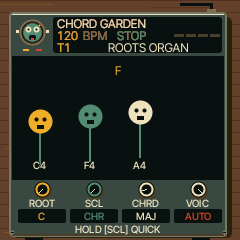
AUTO: F major voiced as C4–F4–A4 after C major.↑ means the next octave. CLOSE uses the listed pitches. OPEN raises the second tone an octave; INV1/INV2 raise the first one/two tones. +OCT adds a lower root: when already using four tones it drops a tone to stay within four voices. Extended ninth/6/9 shapes keep their colour tones by replacing the upper root. At the ends of the keyboard, out-of-range tones are omitted. AUTO starts with a close chord, then chooses nearby inversions on each track. An octave jump, a patch/project reset, or playing a note with another voicing starts a fresh phrase. AUTO affects new live chords; recorded notes retain their pitches.
DIA3/DIA7 follow ROOT and SCL; fixed shapes follow the note you play after keyboard quantisation/transposition. Choose POLY under EDIT → VOICE to hear all chord notes. MONO/LEGATO/UNISON play only the root; drum kits ignore chord mode. Eight voices are shared across the four tracks. PROJECT saves the chord settings; loading a user sound deliberately keeps the current track’s chord settings.
Find a page
ROOTS ORGAN
HOME, then choose a track with ALGORITHM and sound with PRESETS
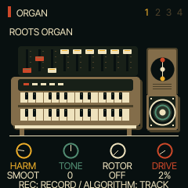
Play the selected instrument and use its four performance controls.
| Knob / label | What it does |
|---|
| K1 · HARM | Harmonic registration |
| K2 · TONE | Upper harmonics/brightness |
| K3 · ROTOR | Rotary mode/speed |
| K4 · DRIVE | Saturation drive |
Tap HOME through MIXER and CLOCK to return here. T4’s curated browser stays on drums; advanced EDIT pages can change its engine. These controls edit the sound you hear; save the project or a user sound to keep changes.
Back to page index
ROCKSTEADY
HOME, then choose a track with ALGORITHM and sound with PRESETS
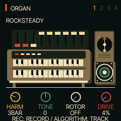
Play the selected instrument and use its four performance controls.
| Knob / label | What it does |
|---|
| K1 · HARM | Harmonic registration |
| K2 · TONE | Upper harmonics/brightness |
| K3 · ROTOR | Rotary mode/speed |
| K4 · DRIVE | Saturation drive |
Tap HOME through MIXER and CLOCK to return here. T4’s curated browser stays on drums; advanced EDIT pages can change its engine. These controls edit the sound you hear; save the project or a user sound to keep changes.
Back to page index
DEEP ROOTS
HOME, then choose a track with ALGORITHM and sound with PRESETS
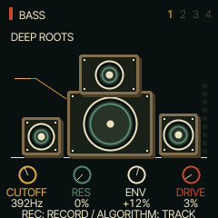
Play the selected instrument and use its four performance controls.
| Knob / label | What it does |
|---|
| K1 · CUTOFF | Filter cutoff |
| K2 · RES | Filter resonance |
| K3 · ENV | Filter envelope amount |
| K4 · DRIVE | Saturation drive |
Tap HOME through MIXER and CLOCK to return here. T4’s curated browser stays on drums; advanced EDIT pages can change its engine. These controls edit the sound you hear; save the project or a user sound to keep changes.
Back to page index
DIGITAL BASS
HOME, then choose a track with ALGORITHM and sound with PRESETS
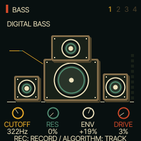
Play the selected instrument and use its four performance controls.
| Knob / label | What it does |
|---|
| K1 · CUTOFF | Filter cutoff |
| K2 · RES | Filter resonance |
| K3 · ENV | Filter envelope amount |
| K4 · DRIVE | Saturation drive |
Tap HOME through MIXER and CLOCK to return here. T4’s curated browser stays on drums; advanced EDIT pages can change its engine. These controls edit the sound you hear; save the project or a user sound to keep changes.
Back to page index
REED MELODICA
HOME, then choose a track with ALGORITHM and sound with PRESETS
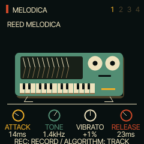
Play the selected instrument and use its four performance controls.
| Knob / label | What it does |
|---|
| K1 · ATTACK | Breath-style attack time |
| K2 · TONE | Filter cutoff/brightness |
| K3 · VIBRATO | Pitch vibrato depth |
| K4 · RELEASE | Release time |
Tap HOME through MIXER and CLOCK to return here. T4’s curated browser stays on drums; advanced EDIT pages can change its engine. These controls edit the sound you hear; save the project or a user sound to keep changes.
Back to page index
WARM TINE
HOME, then choose a track with ALGORITHM and sound with PRESETS
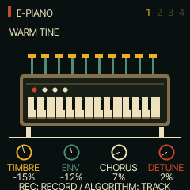
Play the selected instrument and use its four performance controls.
| Knob / label | What it does |
|---|
| K1 · TIMBRE | FM modulator level/brightness |
| K2 · ENV | FM modulator envelope-rate offset |
| K3 · CHORUS | Chorus send |
| K4 · DETUNE | Detune |
Tap HOME through MIXER and CLOCK to return here. T4’s curated browser stays on drums; advanced EDIT pages can change its engine. These controls edit the sound you hear; save the project or a user sound to keep changes.
Back to page index
PIANO CHOP
HOME, then choose a track with ALGORITHM and sound with PRESETS
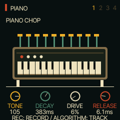
Play the selected instrument and use its four performance controls.
| Knob / label | What it does |
|---|
| K1 · TONE | Filter cutoff/brightness |
| K2 · DECAY | Decay time |
| K3 · DRIVE | Saturation drive |
| K4 · RELEASE | Release time |
Tap HOME through MIXER and CLOCK to return here. T4’s curated browser stays on drums; advanced EDIT pages can change its engine. These controls edit the sound you hear; save the project or a user sound to keep changes.
Back to page index
ROOTS TRUMPET
HOME, then choose a track with ALGORITHM and sound with PRESETS
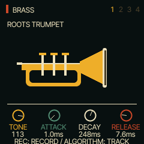
Play the selected instrument and use its four performance controls.
| Knob / label | What it does |
|---|
| K1 · TONE | Filter cutoff/brightness |
| K2 · ATTACK | Attack time |
| K3 · DECAY | Decay time |
| K4 · RELEASE | Release time |
Tap HOME through MIXER and CLOCK to return here. T4’s curated browser stays on drums; advanced EDIT pages can change its engine. These controls edit the sound you hear; save the project or a user sound to keep changes.
Back to page index
MUTED SKANK
HOME, then choose a track with ALGORITHM and sound with PRESETS
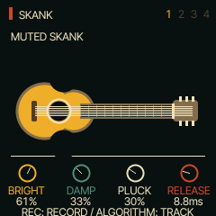
Play the selected instrument and use its four performance controls.
| Knob / label | What it does |
|---|
| K1 · BRIGHT | String brightness |
| K2 · DAMP | String damping |
| K3 · PLUCK | Pluck/excitation position |
| K4 · RELEASE | Release time |
Tap HOME through MIXER and CLOCK to return here. T4’s curated browser stays on drums; advanced EDIT pages can change its engine. These controls edit the sound you hear; save the project or a user sound to keep changes.
Back to page index
DUB WAIL
HOME, then choose a track with ALGORITHM and sound with PRESETS
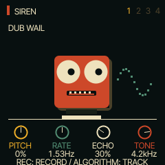
Play the selected instrument and use its four performance controls.
| Knob / label | What it does |
|---|
| K1 · PITCH | Pitch envelope amount |
| K2 · RATE | LFO modulation rate |
| K3 · ECHO | Delay send |
| K4 · TONE | Filter cutoff |
Tap HOME through MIXER and CLOCK to return here. T4’s curated browser stays on drums; advanced EDIT pages can change its engine. These controls edit the sound you hear; save the project or a user sound to keep changes.
Back to page index
ROUND FM BASS
HOME, then choose a track with ALGORITHM and sound with PRESETS
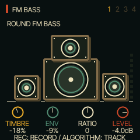
Play the selected instrument and use its four performance controls.
| Knob / label | What it does |
|---|
| K1 · TIMBRE | FM modulator level/brightness |
| K2 · ENV | FM modulator envelope-rate offset |
| K3 · RATIO | Modulator ratio offset |
| K4 · LEVEL | Track level |
Tap HOME through MIXER and CLOCK to return here. T4’s curated browser stays on drums; advanced EDIT pages can change its engine. These controls edit the sound you hear; save the project or a user sound to keep changes.
Back to page index
DUB DRAWBARS
HOME, then choose a track with ALGORITHM and sound with PRESETS
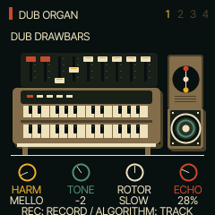
Play the selected instrument and use its four performance controls.
| Knob / label | What it does |
|---|
| K1 · HARM | Harmonic registration |
| K2 · TONE | Upper harmonics/brightness |
| K3 · ROTOR | Rotary mode/speed |
| K4 · ECHO | Delay send |
Tap HOME through MIXER and CLOCK to return here. T4’s curated browser stays on drums; advanced EDIT pages can change its engine. These controls edit the sound you hear; save the project or a user sound to keep changes.
Back to page index
ROOTS KIT
HOME, then choose a track with ALGORITHM and sound with PRESETS
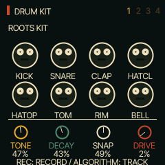
Play the selected instrument and use its four performance controls.
| Knob / label | What it does |
|---|
| K1 · TONE | Drum tone |
| K2 · DECAY | Drum decay |
| K3 · SNAP | Snare/transient snap |
| K4 · DRIVE | Drive |
Tap HOME through MIXER and CLOCK to return here. T4’s curated browser stays on drums; advanced EDIT pages can change its engine. These controls edit the sound you hear; save the project or a user sound to keep changes.
Back to page index
JUNGLE SIGNAL
HOME, then choose a track with ALGORITHM and sound with PRESETS
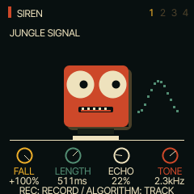
Play the selected instrument and use its four performance controls.
| Knob / label | What it does |
|---|
| K1 · FALL | Pitch envelope amount |
| K2 · LENGTH | Amplitude decay length |
| K3 · ECHO | Delay send |
| K4 · TONE | Filter cutoff |
Tap HOME through MIXER and CLOCK to return here. T4’s curated browser stays on drums; advanced EDIT pages can change its engine. These controls edit the sound you hear; save the project or a user sound to keep changes.
Back to page index
FAST ALARM
HOME, then choose a track with ALGORITHM and sound with PRESETS
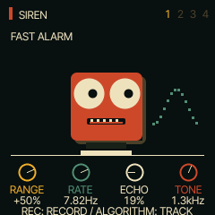
Play the selected instrument and use its four performance controls.
| Knob / label | What it does |
|---|
| K1 · RANGE | Pitch modulation range |
| K2 · RATE | Modulation rate |
| K3 · ECHO | Delay send |
| K4 · TONE | Filter cutoff |
Tap HOME through MIXER and CLOCK to return here. T4’s curated browser stays on drums; advanced EDIT pages can change its engine. These controls edit the sound you hear; save the project or a user sound to keep changes.
Back to page index
ENV
Tap ENV to enter its pages; tap again to cycle to ENV
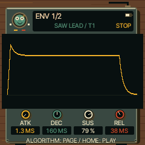
Shape the loudness of each note. Try a short attack and release for crisp chops.
| Knob / label | What it does |
|---|
| K1 · ATK | Time to rise after a key press |
| K2 · DEC | Time to fall to the sustain level |
| K3 · SUS | Level while the key stays held |
| K4 · REL | Time to fade after releasing the key |
ENV DEST
Tap ENV to enter its pages; tap again to cycle to ENV DEST
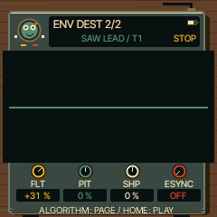
Let the note envelope move other parts of the sound.
| Knob / label | What it does |
|---|
| K1 · FLT | Filter movement amount |
| K2 · PIT | Pitch movement amount |
| K3 · SHP | Engine-specific waveform/timbre movement amount |
| K4 · ESYNC | Tempo-synchronised envelope timing |
LFO
Tap LFO to enter its pages; tap again to cycle to LFO
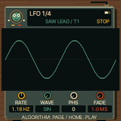
Add repeating movement to the selected sound.
| Knob / label | What it does |
|---|
| K1 · RATE | Modulation speed |
| K2 · WAVE | Modulation waveform |
| K3 · PHS | Starting phase |
| K4 · FADE | Time for modulation to fade in |
LFO 2
Tap LFO to enter its pages; tap again to cycle to LFO 2
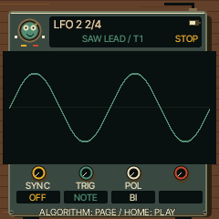
Choose how the LFO starts and follows the beat.
| Knob / label | What it does |
|---|
| K1 · SYNC | Free-running or tempo-synchronised timing |
| K2 · TRIG | Note-trigger/restart behaviour |
| K3 · POL | Positive-only or bipolar movement |
| K4 · — | Unused |
LFO DEST
Tap LFO to enter its pages; tap again to cycle to LFO DEST
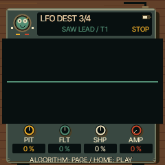
Decide what the LFO moves. Start with small amounts.
| Knob / label | What it does |
|---|
| K1 · PIT | Pitch modulation depth (vibrato) |
| K2 · FLT | Filter modulation depth |
| K3 · SHP | Engine-specific timbre modulation depth |
| K4 · AMP | Amplitude modulation depth (tremolo) |
MOD
Tap LFO to enter its pages; tap again to cycle to MOD
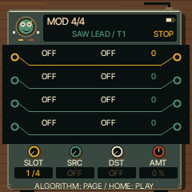
Connect a modulation source to a sound parameter.
| Knob / label | What it does |
|---|
| K1 · SLOT | Select a modulation slot |
| K2 · SRC | Select the source |
| K3 · DST | Select the destination |
| K4 · AMT | Amount and direction of the modulation |
FX
Tap FX to enter its pages; tap again to cycle to FX
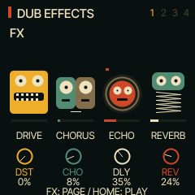
Set the selected track’s distortion and effect sends.
| Knob / label | What it does |
|---|
| K1 · DST | Distortion amount |
| K2 · CHO | Chorus send |
| K3 · DLY | Delay send |
| K4 · REV | Reverb send |
Raise a send to hear its effect. The later delay, reverb and chorus pages set the shared effects for all tracks.
Back to page index
SLICER
Tap FX to enter its pages; tap again to cycle to SLICER
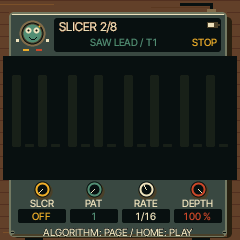
Chop a sustained sound into rhythmic pulses.
| Knob / label | What it does |
|---|
| K1 · SLCR | Slicer mode |
| K2 · PAT | Rhythm pattern |
| K3 · RATE | Chopping speed |
| K4 · DEPTH | Chopping depth |
INSERT
Tap FX to enter its pages; tap again to cycle to INSERT
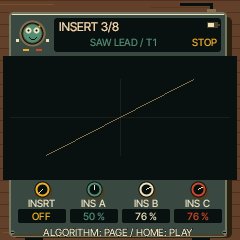
Process the selected track through an insert effect.
| Knob / label | What it does |
|---|
| K1 · INSRT | Choose OFF, SOFT, HARD, FOLD, FUZZ, CRUSH, PHASR, FLANG or CHOR |
| K2 · INS A | Drive for distortion; bit depth for CRUSH; speed for swept effects |
| K3 · INS B | Tone for distortion; sample rate for CRUSH; depth for swept effects |
| K4 · INS C | Output level for distortion; low-pass cutoff for CRUSH; feedback for swept effects |
The labels change with the effect type. OFF leaves A/B/C inactive. Use INSERT 2 to blend the result.
Back to page index
INSERT 2
Tap FX to enter its pages; tap again to cycle to INSERT 2
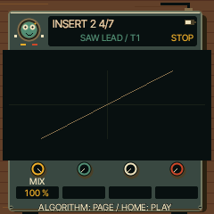
Blend the track’s insert effect with its original sound.
| Knob / label | What it does |
|---|
| K1 · MIX | Dry/wet mix |
| K2 · — | Unused |
| K3 · — | Unused |
| K4 · — | Unused |
DLY
Tap FX to enter its pages; tap again to cycle to DLY
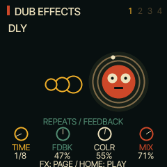
Set the shared dub delay.
| Knob / label | What it does |
|---|
| K1 · TIME | Delay-time division |
| K2 · FDBK | Repeat feedback |
| K3 · COLR | Repeat tone/colour |
| K4 · MIX | Delay return mix |
Raise DLY on the track’s FX page to feed the delay. High feedback creates long tails; lower it to let the repeats die away.
Back to page index
REVERB
Tap FX to enter its pages; tap again to cycle to REVERB
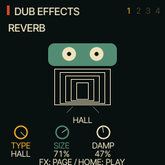
Set the shared reverb space.
| Knob / label | What it does |
|---|
| K1 · TYPE | Room, spring or hall model |
| K2 · SIZE | Space size/decay character |
| K3 · DAMP | High-frequency damping |
| K4 · — | Unused |
Raise the track’s REV send on FX, or use the mixer’s REVERB mode.
Back to page index
CHORUS
Tap FX to enter its pages; tap again to cycle to CHORUS
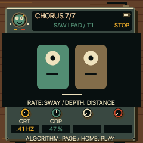
Set the shared chorus movement.
| Knob / label | What it does |
|---|
| K1 · CRT | Modulation speed |
| K2 · CDP | Modulation depth |
| K3 · — | Unused |
| K4 · — | Unused |
Raise CHO on the track’s FX page to hear the chorus.
Back to page index
SCL
Tap SCL to enter its pages; tap again to cycle to SCL
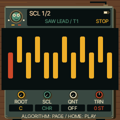
Keep notes in a chosen musical key, or transpose a part.
| Knob / label | What it does |
|---|
| K1 · ROOT | Key/root note |
| K2 · SCL | Scale |
| K3 · QNT | Keyboard quantisation mode |
| K4 · TRN | Transpose in semitones |
ROOT sets the scale’s key; it does not replace the note you play. Quantisation and transpose happen before chord generation.
Back to page index
CHORD
Tap SCL to enter its pages; tap again to cycle to CHORD
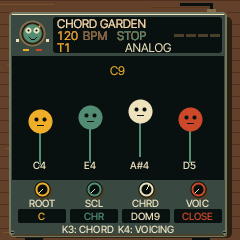
Play a complete chord from one key.
| Knob / label | What it does |
|---|
| K1 · ROOT | Key/root for scale-based chords |
| K2 · SCL | Scale used by DIA3 and DIA7 |
| K3 · CHRD | Chord type; OFF returns single notes |
| K4 · VOIC | CLOSE, OPEN, INV1, INV2, +OCT or AUTO voice leading |
Choose a polyphonic organ or piano, set CHRD to MAJ6 or MIN9, then play a key. Fixed chord types follow that key; DIA3/DIA7 build chords from the selected scale. See the chord table above.
Back to page index
EDIT 1 / ANALOG
Tap EDIT to enter its pages; tap again to cycle to EDIT 1
Oscillators and noise.
| Knob / label | What it does |
|---|
| K1 · WAVE | Waveform |
| K2 · DTN | Oscillator detune |
| K3 · MIX | Oscillator balance |
| K4 · NOIS | Noise level |
These controls depend on the selected engine. Choose the engine by holding EDIT outside the stopped STEP editor. Change one control while playing to hear its effect.
Back to page index
EDIT 1 / PHASE
Tap EDIT to enter its pages; tap again to cycle to EDIT 1
Phase-distortion oscillators.
| Knob / label | What it does |
|---|
| K1 · WAVE | First waveform |
| K2 · WAVE2 | Second waveform |
| K3 · DCW | Phase-distortion amount |
| K4 · ENV | Envelope influence on distortion |
These controls depend on the selected engine. Choose the engine by holding EDIT outside the stopped STEP editor. Change one control while playing to hear its effect.
Back to page index
EDIT 1 / LOFI
Tap EDIT to enter its pages; tap again to cycle to EDIT 1
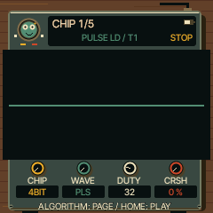
Chip-style tone generation.
| Knob / label | What it does |
|---|
| K1 · CHIP | Chip model |
| K2 · WAVE | Waveform |
| K3 · DUTY | Pulse duty cycle |
| K4 · CRSH | Bit crushing |
These controls depend on the selected engine. Choose the engine by holding EDIT outside the stopped STEP editor. Change one control while playing to hear its effect.
Back to page index
EDIT 1 / SAMPLE
Tap EDIT to enter its pages; tap again to cycle to EDIT 1
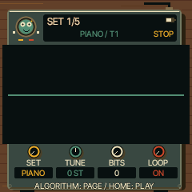
Sample playback setup.
| Knob / label | What it does |
|---|
| K1 · SET | Sample set |
| K2 · TUNE | Pitch tuning |
| K3 · BITS | Bit depth |
| K4 · LOOP | Loop mode |
These controls depend on the selected engine. Choose the engine by holding EDIT outside the stopped STEP editor. Change one control while playing to hear its effect.
Back to page index
EDIT 1 / VOICE
Tap EDIT to enter its pages; tap again to cycle to EDIT 1
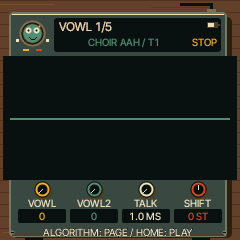
Vowel/formant synthesis.
| Knob / label | What it does |
|---|
| K1 · VOWL | First vowel |
| K2 · VOWL2 | Second vowel |
| K3 · TALK | Blend/talk between vowels |
| K4 · SHIFT | Formant shift |
These controls depend on the selected engine. Choose the engine by holding EDIT outside the stopped STEP editor. Change one control while playing to hear its effect.
Back to page index
EDIT 1 / TRIO
Tap EDIT to enter its pages; tap again to cycle to EDIT 1
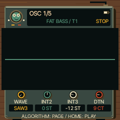
Three-oscillator intervals.
| Knob / label | What it does |
|---|
| K1 · WAVE | Waveform |
| K2 · INT2 | Second oscillator interval |
| K3 · INT3 | Third oscillator interval |
| K4 · DTN | Detune |
These controls depend on the selected engine. Choose the engine by holding EDIT outside the stopped STEP editor. Change one control while playing to hear its effect.
Back to page index
EDIT 1 / WHEEL
Tap EDIT to enter its pages; tap again to cycle to EDIT 1
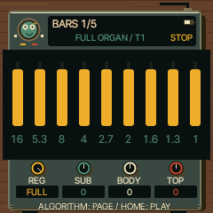
Tonewheel harmonic registration.
| Knob / label | What it does |
|---|
| K1 · REG | Drawbar registration |
| K2 · SUB | Low/sub harmonics |
| K3 · BODY | Middle/body harmonics |
| K4 · TOP | Upper harmonics |
These controls depend on the selected engine. Choose the engine by holding EDIT outside the stopped STEP editor. Change one control while playing to hear its effect.
Back to page index
EDIT 1 / GRAIN
Tap EDIT to enter its pages; tap again to cycle to EDIT 1
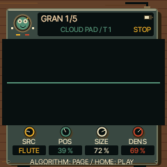
Granular playback source and timing.
| Knob / label | What it does |
|---|
| K1 · SRC | Source |
| K2 · POS | Position within source |
| K3 · SIZE | Grain size |
| K4 · DENS | Grain density |
These controls depend on the selected engine. Choose the engine by holding EDIT outside the stopped STEP editor. Change one control while playing to hear its effect.
Back to page index
EDIT 1 / PHYS
Tap EDIT to enter its pages; tap again to cycle to EDIT 1
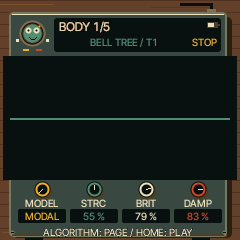
Physical-modelled resonator.
| Knob / label | What it does |
|---|
| K1 · MODEL | Model |
| K2 · STRC | Structure/inharmonicity |
| K3 · BRIT | Brightness |
| K4 · DAMP | Damping |
These controls depend on the selected engine. Choose the engine by holding EDIT outside the stopped STEP editor. Change one control while playing to hear its effect.
Back to page index
EDIT 1 / DRUM
Tap EDIT to enter its pages; tap again to cycle to EDIT 1
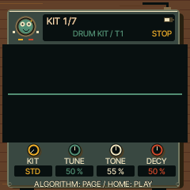
Electronic drum kit character.
| Knob / label | What it does |
|---|
| K1 · KIT | Kit |
| K2 · TUNE | Overall tuning |
| K3 · TONE | Tone |
| K4 · DECY | Decay |
These controls depend on the selected engine. Choose the engine by holding EDIT outside the stopped STEP editor. Change one control while playing to hear its effect.
Back to page index
EDIT 1 / NOISE
Tap EDIT to enter its pages; tap again to cycle to EDIT 1
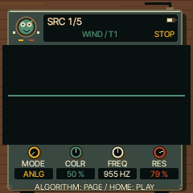
Filtered noise generator.
| Knob / label | What it does |
|---|
| K1 · MODE | Noise mode |
| K2 · COLR | Noise colour |
| K3 · FREQ | Filter frequency |
| K4 · RES | Resonance |
These controls depend on the selected engine. Choose the engine by holding EDIT outside the stopped STEP editor. Change one control while playing to hear its effect.
Back to page index
EDIT 1 / FM6
Tap EDIT to enter its pages; tap again to cycle to EDIT 1
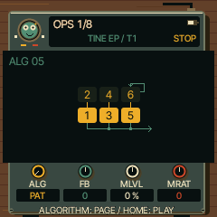
Six-operator FM macro controls.
| Knob / label | What it does |
|---|
| K1 · ALG | Algorithm/routing |
| K2 · FB | Feedback offset |
| K3 · MLVL | Modulator level offset |
| K4 · MRAT | Modulator ratio offset |
These controls depend on the selected engine. Choose the engine by holding EDIT outside the stopped STEP editor. Change one control while playing to hear its effect.
Back to page index
EDIT 1 / SLICE
Tap EDIT to enter its pages; tap again to cycle to EDIT 1
Sliced sample playback.
| Knob / label | What it does |
|---|
| K1 · SRC | Sample source |
| K2 · DIV | Slice division |
| K3 · START | Start offset |
| K4 · PTCH | Pitch |
These controls depend on the selected engine. Choose the engine by holding EDIT outside the stopped STEP editor. Change one control while playing to hear its effect.
Back to page index
EDIT 2 / ANALOG
Tap EDIT to enter its pages; tap again to cycle to EDIT 2
Filter and drive.
| Knob / label | What it does |
|---|
| K1 · CUT | Filter cutoff |
| K2 · RES | Resonance |
| K3 · DRV | Saturation drive |
| K4 · KTR | Filter key tracking |
These controls depend on the selected engine. Choose the engine by holding EDIT outside the stopped STEP editor. Change one control while playing to hear its effect.
Back to page index
EDIT 2 / PHASE
Tap EDIT to enter its pages; tap again to cycle to EDIT 2
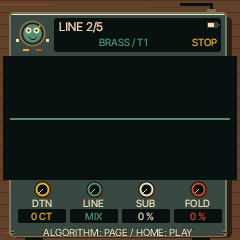
Shape the oscillator combination.
| Knob / label | What it does |
|---|
| K1 · DTN | Detune |
| K2 · LINE | Mix or ring-modulate the two lines |
| K3 · SUB | Sub-oscillator level |
| K4 · FOLD | Wavefolding amount |
These controls depend on the selected engine. Choose the engine by holding EDIT outside the stopped STEP editor. Change one control while playing to hear its effect.
Back to page index
EDIT 2 / LOFI
Tap EDIT to enter its pages; tap again to cycle to EDIT 2
Retro movement and tone.
| Knob / label | What it does |
|---|
| K1 · SWP | Pitch sweep |
| K2 · VIB | Vibrato amount |
| K3 · ARP | Chip arpeggio |
| K4 · TONE | Tone/brightness |
These controls depend on the selected engine. Choose the engine by holding EDIT outside the stopped STEP editor. Change one control while playing to hear its effect.
Back to page index
EDIT 2 / SAMPLE
Tap EDIT to enter its pages; tap again to cycle to EDIT 2
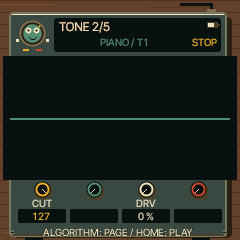
Sample colour.
| Knob / label | What it does |
|---|
| K1 · CUT | Low-pass cutoff |
| K2 · — | Unused |
| K3 · DRV | Drive |
| K4 · — | Unused |
These controls depend on the selected engine. Choose the engine by holding EDIT outside the stopped STEP editor. Change one control while playing to hear its effect.
Back to page index
EDIT 2 / VOICE
Tap EDIT to enter its pages; tap again to cycle to EDIT 2
Voice texture.
| Knob / label | What it does |
|---|
| K1 · BUZZ | Buzz amount |
| K2 · BRTH | Breath/noise amount |
| K3 · Q | Formant resonance |
| K4 · RAND | Random variation |
These controls depend on the selected engine. Choose the engine by holding EDIT outside the stopped STEP editor. Change one control while playing to hear its effect.
Back to page index
EDIT 2 / TRIO
Tap EDIT to enter its pages; tap again to cycle to EDIT 2
Oscillator combination and filter.
| Knob / label | What it does |
|---|
| K1 · MODE | Combination mode |
| K2 · CUT | Filter cutoff |
| K3 · RES | Resonance |
| K4 · PW | Pulse width |
These controls depend on the selected engine. Choose the engine by holding EDIT outside the stopped STEP editor. Change one control while playing to hear its effect.
Back to page index
EDIT 2 / WHEEL
Tap EDIT to enter its pages; tap again to cycle to EDIT 2
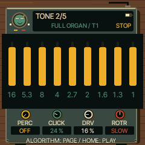
Organ articulation and movement.
| Knob / label | What it does |
|---|
| K1 · PERC | Percussion setting |
| K2 · CLICK | Key-click amount |
| K3 · DRV | Drive |
| K4 · ROTR | Rotary mode/speed |
These controls depend on the selected engine. Choose the engine by holding EDIT outside the stopped STEP editor. Change one control while playing to hear its effect.
Back to page index
EDIT 2 / GRAIN
Tap EDIT to enter its pages; tap again to cycle to EDIT 2
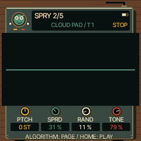
Granular pitch and texture.
| Knob / label | What it does |
|---|
| K1 · PTCH | Pitch |
| K2 · SPRD | Grain spread |
| K3 · RAND | Random variation |
| K4 · TONE | Tone |
These controls depend on the selected engine. Choose the engine by holding EDIT outside the stopped STEP editor. Change one control while playing to hear its effect.
Back to page index
EDIT 2 / PHYS
Tap EDIT to enter its pages; tap again to cycle to EDIT 2
Excitation and articulation.
| Knob / label | What it does |
|---|
| K1 · POS | Excitation/pluck position |
| K2 · ACC | Accent response |
| K3 · BOW | Bowed excitation amount |
| K4 · EXC | Direct exciter amount mixed into output |
These controls depend on the selected engine. Choose the engine by holding EDIT outside the stopped STEP editor. Change one control while playing to hear its effect.
Back to page index
EDIT 2 / DRUM
Tap EDIT to enter its pages; tap again to cycle to EDIT 2
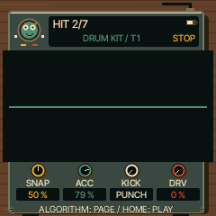
Drum transient and drive.
| Knob / label | What it does |
|---|
| K1 · SNAP | Snap |
| K2 · ACC | Accent strength |
| K3 · KICK | Kick character |
| K4 · DRV | Drive |
These controls depend on the selected engine. Choose the engine by holding EDIT outside the stopped STEP editor. Change one control while playing to hear its effect.
Back to page index
EDIT 2 / NOISE
Tap EDIT to enter its pages; tap again to cycle to EDIT 2
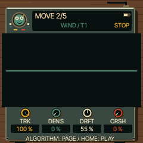
Noise movement and texture.
| Knob / label | What it does |
|---|
| K1 · TRK | Pitch/key tracking |
| K2 · DENS | Density |
| K3 · DRFT | Slow drift |
| K4 · CRSH | Crushing amount |
These controls depend on the selected engine. Choose the engine by holding EDIT outside the stopped STEP editor. Change one control while playing to hear its effect.
Back to page index
EDIT 2 / FM6
Tap EDIT to enter its pages; tap again to cycle to EDIT 2
FM response and source patch.
| Knob / label | What it does |
|---|
| K1 · MEG | Modulator envelope-rate offset |
| K2 · VMOD | Velocity-to-modulation sensitivity |
| K3 · DTUN | Detune |
| K4 · SLOT | FM patch slot |
These controls depend on the selected engine. Choose the engine by holding EDIT outside the stopped STEP editor. Change one control while playing to hear its effect.
Back to page index
EDIT 2 / SLICE
Tap EDIT to enter its pages; tap again to cycle to EDIT 2
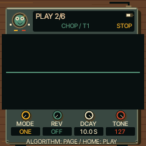
Slice articulation.
| Knob / label | What it does |
|---|
| K1 · MODE | Playback mode |
| K2 · REV | Reverse |
| K3 · DCAY | Decay |
| K4 · TONE | Tone |
These controls depend on the selected engine. Choose the engine by holding EDIT outside the stopped STEP editor. Change one control while playing to hear its effect.
Back to page index
FILTER
Tap EDIT to enter its pages; tap again to cycle to FILTER
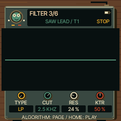
Choose the analogue engine’s filter response.
| Knob / label | What it does |
|---|
| K1 · TYPE | Filter type |
| K2 · CUT | Cutoff: lower is darker |
| K3 · RES | Resonance near the cutoff |
| K4 · KTR | How much cutoff follows note pitch |
LANES
Tap EDIT to enter its pages; tap again to cycle to LANES
Balance the first four drum lanes.
| Knob / label | What it does |
|---|
| K1 · KICK | Kick level |
| K2 · SNARE | Snare level |
| K3 · CLAP | Clap level |
| K4 · HATCL | Closed hi-hat level |
LANES 2
Tap EDIT to enter its pages; tap again to cycle to LANES 2
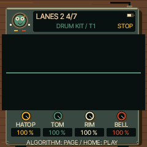
Balance the other four drum lanes.
| Knob / label | What it does |
|---|
| K1 · HATOP | Open hi-hat level |
| K2 · TOM | Tom level |
| K3 · RIM | Rim level |
| K4 · BELL | Bell level |
SLICES
Tap EDIT to enter its pages; tap again to cycle to SLICES
Trim and split an uploaded sample into playable slices.
| Knob / label | What it does |
|---|
| K1 · SLICE | Select slice marker, or END |
| K2 · POS | Move the selected marker |
| K3 · SPLIT | Select SPLIT action |
| K4 · JOIN | Select JOIN action |
Turn an action knob then OCT+ to apply; OCT− cancels. Editing requires a populated user sample slot. Factory sources are view-only. Keys select and audition slices.
Back to page index
OPERATOR
Tap EDIT to enter its pages; tap again to cycle to OPERATOR
Edit one of the six FM operators: an oscillator that may make sound or modulate another.
| Knob / label | What it does |
|---|
| K1 · OP | Select operator |
| K2 · RATIO | Coarse frequency ratio (or fixed-frequency setting) |
| K3 · FINE | Fine frequency adjustment |
| K4 · LEVEL | Operator output level |
Changing a carrier level changes loudness; changing a modulator level mainly changes brightness. The algorithm shows how operators connect.
Back to page index
OP ENV
Tap EDIT to enter its pages; tap again to cycle to OP ENV
Shape the selected FM operator over time.
| Knob / label | What it does |
|---|
| K1 · OP | Select operator |
| K2 · STAGE | Select envelope stage |
| K3 · RATE | Rate for that stage |
| K4 · LEVEL | Target level for that stage |
This is an operator envelope, separate from the whole-instrument ENV page. Higher rate means faster movement.
Back to page index
OPERATOR 2
Tap EDIT to enter its pages; tap again to cycle to OPERATOR 2
Set the selected FM operator’s tuning and touch response.
| Knob / label | What it does |
|---|
| K1 · OP | Select operator |
| K2 · MODE | Ratio or fixed-frequency mode |
| K3 · DTUN | Operator detune |
| K4 · VEL | Velocity sensitivity |
VOICE
Tap EDIT to enter its pages; tap again to cycle to VOICE
Choose how notes share voices and slide between pitches.
| Knob / label | What it does |
|---|
| K1 · VCE | POLY, MONO, LEGATO or UNISON |
| K2 · GLD | Glide time |
| K3 · GLMOD | Glide behaviour |
| K4 · PRIO | Mono note priority |
One-key chords need POLY. All four tracks share eight voices; long four-note chords can steal voices from other parts.
Back to page index
VOICE 2
Tap EDIT to enter its pages; tap again to cycle to VOICE 2
Control voice allocation and the selected track’s placement.
| Knob / label | What it does |
|---|
| K1 · ALLOC | Voice allocation policy |
| K2 · DTUNE | Unison detune |
| K3 · PAN | Track pan |
| K4 · MUTE | Track mute |
VOICE 3
Tap EDIT to enter its pages; tap again to cycle to VOICE 3
Spread unison voices across the stereo field.
| Knob / label | What it does |
|---|
| K1 · SPRD | Stereo spread |
| K2 · — | Unused |
| K3 · — | Unused |
| K4 · — | Unused |
SONG
Tap GLO to enter its pages; tap again to cycle to SONG
Arrange saved patterns into a complete four-track performance.
| Knob / label | What it does |
|---|
| K1 · SECTION | Select section, or + ADD |
| K2 · TRACK | Select track cell |
| K3 · PATTERN | Choose pattern source A–D or MUTE; on + ADD create a section |
| K4 · LOOPS | Number of repetitions, 1–16 |
First save variations in PROJECT slots A–D. Each arrangement row chooses a source for each track, using the current sounds. PLAY here starts the arrangement and stops at its end. Up to 16 sections. A loop follows the first unmuted track’s pattern length, not necessarily one bar. Stop playback before editing and save the project again to keep the arrangement.
Back to page index
USER
Tap SAVE to enter its pages; tap again to cycle to USER
Save or recall one instrument sound.
| Knob / label | What it does |
|---|
| K1 · SLOT | Choose user slot |
| K2 · LOAD | Select LOAD action |
| K3 · ERASE | Select ERASE action |
| K4 · SAVE | Select SAVE action |
Turn the action knob, then OCT+ and follow the confirmation/name prompts; OCT− cancels. Stop to save. Loading a sound preserves the track’s scale/chord settings. Use PROJECT to save the whole session including chords.
Back to page index
PRESETS
Tap SAVE to enter its pages; tap again to cycle to PRESETS
Browse factory and saved sounds.
| Knob / label | What it does |
|---|
| K1 · No. | Choose a preset |
| K2 · ENG | Filter by engine |
| K3 · FAV | Favourite control |
| K4 · LIST | Choose list/category |
PRESETS also browses. This is the broader library; HOME’s curated browser focuses on the reggae instruments.
Back to page index
PHRASES
Tap SAVE to enter its pages; tap again to cycle to PHRASES
Load an existing phrase into the selected track.
| Knob / label | What it does |
|---|
| K1 · PAT | Choose phrase |
| K2 · LOAD | Select LOAD action |
| K3 · — | Unused |
| K4 · — | Unused |
Confirm LOAD with OCT+. This replaces the selected track’s pattern; save a project first if you want to keep it.
Back to page index
PROJECT
Tap SAVE to enter its pages; tap again to cycle to PROJECT
Keep all four parts, sounds, chord settings and arrangement together.
| Knob / label | What it does |
|---|
| K1 · SLOT | Choose project slot A–D |
| K2 · ERASE | Select ERASE action |
| K3 · LOAD | Select LOAD action |
| K4 · SAVE | Select SAVE action |
Turn the action knob then OCT+; follow overwrite/name prompts. OCT− cancels. Stop playback before saving. Slots A–D are also the arrangement’s pattern sources.
Back to page index
TOOLS
Tap SAVE to enter its pages; tap again to cycle to TOOLS
Clear or initialise parts of a project.
| Knob / label | What it does |
|---|
| K1 · PAT | Clear selected track’s pattern |
| K2 · SOUND | Initialise selected track’s sound |
| K3 · SEC | Remove arrangement section |
| K4 · SONG | Clear arrangement |
Select an action and read its confirmation before OCT+. OCT− cancels. Hold SAVE to undo supported edits.
Back to page index
ARP
Tap ARP to enter its pages; tap again to cycle to ARP
Turn held notes into a repeating arpeggio.
| Knob / label | What it does |
|---|
| K1 · MODE | Arpeggio mode; OFF disables it |
| K2 · RATE | Note rate |
| K3 · OCT | Octave range |
| K4 · GATE | Note gate length |
Hold a chord and press PLAY if required by the clock/transport setup. Use short gates for separated notes.
Back to page index
ARP 2
Tap ARP to enter its pages; tap again to cycle to ARP 2
Add variation to the arpeggio.
| Knob / label | What it does |
|---|
| K1 · SWG | Swing |
| K2 · PROB | Probability of playing a note |
| K3 · HOLD | Latch/hold notes after key release |
| K4 · ORD | Note order |
STEP
Tap SEQ to enter its pages; tap again to cycle to STEP
Write notes and chords into a pattern, one step at a time.
| Knob / label | What it does |
|---|
| K1 · STEP | Choose step |
| K2 · NOTE | Pitch of the selected note |
| K3 · LENGTH | Note duration; TIME when selecting REST/TIE |
| K4 · FEEL | Normal, accent or slide feel |
Stopped: hold EDIT and play keys to add notes; hold REC and play keys to replace them. Hold EDIT+REC to clear one step. Hold EDIT, then SEQ for one second to clear the entire roll. Hold SAVE to undo. Tap REC to arm step entry; PLAY starts/stops playback. Up to four notes per step and 64 steps per track.
Back to page index
DETAIL
Tap SEQ to enter its pages; tap again to cycle to DETAIL
Add variation to the selected sequencer step.
| Knob / label | What it does |
|---|
| K1 · CHANCE | Play probability, then conditional triggers above 100% |
| K2 · RATCH | Number of repeated hits within the step |
| K3 · NUDGE | Timing offset (requires quantisation OFF to hear) |
| K4 · VEL | Step velocity |
PRESETS selects the step. Accent can override the velocity; ratchets and quantisation can override nudge. The screen shows these conditions.
Back to page index
AUTOMATION
Tap SEQ to enter its pages; tap again to cycle to AUTOMATION
Edit per-step locks and recorded parameter movement.
| Knob / label | What it does |
|---|
| K1 · ROW | Select row |
| K2 · EVENT | Select/move event’s step (where applicable) |
| K3 · LOCK | Select parameter/type (where applicable) |
| K4 · PLAY | Edit row value; PLAY row toggles automation |
Labels change with the row. + ADD: choose step/type, then OCT+ to add. On a record OCT+ switches LOCK (one step) and AUTO (until changed). EDIT deletes/reset the row. QUANTIZE row K4 enables/disables timing quantisation; PLAY row OCT+ asks to clear automation. The four tracks share 128 automation records.
Back to page index
MIXER
Tap HOME to enter its pages; tap again to cycle to MIXER
Mix all four tracks from one persistent page.
| Knob / label | What it does |
|---|
| K1 · LEVEL | Track 1 level |
| K2 · LEVEL | Track 2 level |
| K3 · LEVEL | Track 3 level |
| K4 · LEVEL | Track 4 level |
C5 selects LEVEL, D5 PAN, E5 REVERB: all four knobs then edit that property for T1–T4. Vertical faders always show volume. First four black keys toggle mute; hold F3/G3/A3/B3 to solo T1/T2/T3/T4. No held button is needed to stay here.
Back to page index
CLOCK
Tap HOME to enter its pages; tap again to cycle to CLOCK
Set the shared transport timing.
| Knob / label | What it does |
|---|
| K1 · BPM | Tempo in BPM |
| K2 · SWG | Global swing |
| K3 · CLK | Internal or external clock source |
| K4 · — | Unused |
Use internal clock for standalone play. External clock requires a source sending MIDI clock/transport.
Back to page index
RIDDIM GRID
SEQ with a DRUM track selected
Program eight drum lanes in the pattern.
| Knob / label | What it does |
|---|
| K1 · STEP | Step |
| K2 · DRUM | Drum lane |
| K3 · HIT | Hit on/off |
| K4 · ACCENT | Accent on/off |
Use PLAY to audition the loop. The grid replaces the melodic roll for the DRUM engine.
Back to page index
MIXER / PAN
HOME → MIXER, then D5
Place each track left or right.
| Knob / label | What it does |
|---|
| K1 · PAN | Track 1 pan |
| K2 · PAN | Track 2 pan |
| K3 · PAN | Track 3 pan |
| K4 · PAN | Track 4 pan |
C5 returns the knobs to volume; E5 switches them to reverb sends.
Back to page index
MIXER / REVERB
HOME → MIXER, then E5
Send each track to the shared reverb.
| Knob / label | What it does |
|---|
| K1 · REVERB | Track 1 reverb send |
| K2 · REVERB | Track 2 reverb send |
| K3 · REVERB | Track 3 reverb send |
| K4 · REVERB | Track 4 reverb send |
C5 returns to volume; D5 switches to pan. Set the reverb character on FX → REVERB.
Back to page index
ENGINE WORKSHOP
Hold EDIT outside the stopped melodic STEP page
Select an engine and its factory sound.
| Knob / label | What it does |
|---|
| K1 · ENG | Engine |
| K2 · No. | Preset number |
| K3 · FAV | Favourite control |
| K4 · — | Unused |
On stopped STEP, hold EDIT is deliberately reserved for adding notes.
Back to page index
SCALE GARDEN
Hold SCL
Set the chord keyboard without leaving your current page.
| Knob / label | What it does |
|---|
| K1 · ROOT | Key/root |
| K2 · SCL | Scale |
| K3 · CHRD | Chord type |
| K4 · VOIC | Voicing |
Release SCL to return. The normal CHORD page offers the same four controls without holding.
Back to page index
RECORD DESK
Hold REC outside the stopped melodic STEP page
Prepare the metronome and recording lead-in.
| Knob / label | What it does |
|---|
| K1 · CLICK | Metronome: OFF / REC / ON |
| K2 · COUNT | Count-in length |
| K3 · LEVEL | Click level |
| K4 · — | Unused |
Release REC to return. On stopped STEP, hold REC and keys replaces notes instead.
Back to page index
PATTERN TOOLS
Hold SEQ
Change pattern length and timing, or use the keyboard tools.
| Knob / label | What it does |
|---|
| K1 · LEN | Pattern length |
| K2 · DIV | Step division/rate |
| K3 · SWG | Pattern swing |
| K4 · GATE | Pattern gate length |
F4 opens Euclid. Read the on-screen key map before using clear/random tools; hold SAVE afterwards to undo.
Back to page index
EUCLID
Hold SEQ, then F4
Distribute hits evenly across a cycle.
| Knob / label | What it does |
|---|
| K1 · HITS | Number of hits |
| K2 · STEPS | Number of steps |
| K3 · ROT | Rotate the rhythm |
| K4 · — | Unused on melodic tracks; drum lane on DRUM |
OCT+ applies; OCT− cancels. The preview is not committed until applied.
Back to page index
DUB PUNCH-IN
Hold FX
Perform momentary dub effects over the playing mix.
| Knob / label | What it does |
|---|
| K1 · FILTER | Low/high-pass filter sweep |
| K2 · CRUSH | Crushing amount |
| K3 · THROW | Delay throw amount |
| K4 · DEPTH | Punch-in effect depth; shimmer amount for harmonic effects |
White keys F3/G3/A3: repeat 1/8, 1/16, 1/32; B3 reverse; C4/D4 low/high-pass; E4 tape stop; F4 freeze; G4/A4 octave up/down; B4 flanger; C5 phaser; D5 reverb throw; E5 echo throw; F5 gate; G5 mono. Release to end the punch-in; tails can continue. FX LATCH in settings changes release behaviour.
Back to page index
HELD MIXER
Hold GLO (optional shortcut)
Adjust the four track volumes temporarily.
| Knob / label | What it does |
|---|
| K1 · LEVEL | Track 1 level |
| K2 · LEVEL | Track 2 level |
| K3 · LEVEL | Track 3 level |
| K4 · LEVEL | Track 4 level |
Use HOME → MIXER for the persistent page with pan and reverb.
Back to page index
DISPLAY
Hold HOME, then ALGORITHM chooses the tab
System settings: display.
| Knob / label | What it does |
|---|
| K1 · VALUE | Change the selected row’s value |
| K2 · VALUE | Change the selected row’s value |
| K3 · VALUE | Change the selected row’s value |
| K4 · VALUE | Change the selected row’s value |
PRESETS selects the row; all four knobs edit that same selected row, not four different rows. OCT−/+ also decrease/increase values. OCT+ opens action rows. HOME exits. COLOR: stored palette preference; the new REGGAE artwork keeps its own palette. STYLE: filled or outlined controls. LARGE: expanded parameter feedback while editing. ANIM: ON, OFF, or idle animation. LEDS: key-light mode. SCREEN OFF: idle timeout. SCOPE: output or pre-master mix measurement. HOME: legacy scope/tracks/levels preference; curated reggae sounds use their own performance screens.
Back to page index
CONTROL
Hold HOME, then ALGORITHM chooses the tab
System settings: control.
| Knob / label | What it does |
|---|
| K1 · VALUE | Change the selected row’s value |
| K2 · VALUE | Change the selected row’s value |
| K3 · VALUE | Change the selected row’s value |
| K4 · VALUE | Change the selected row’s value |
PRESETS selects the row; all four knobs edit that same selected row, not four different rows. OCT−/+ also decrease/increase values. OCT+ opens action rows. HOME exits. HOLD: time before a button opens its held layer. KNOB ACCEL: faster turns make larger changes. FX LATCH: keep punch-in effects latched. BPM LOCK: restrict accidental SELECT tempo edits. SCALE LEDS: show notes in the scale. STEP PREVIEW: audition the selected step. CHORD ENTRY: HOLD or ADD note-entry behaviour. SELECT: choose BPM, PAGE, modulation wheel or velocity for the SELECT encoder.
Back to page index
AUDIO
Hold HOME, then ALGORITHM chooses the tab
System settings: audio.
| Knob / label | What it does |
|---|
| K1 · VALUE | Change the selected row’s value |
| K2 · VALUE | Change the selected row’s value |
| K3 · VALUE | Change the selected row’s value |
| K4 · VALUE | Change the selected row’s value |
PRESETS selects the row; all four knobs edit that same selected row, not four different rows. OCT−/+ also decrease/increase values. OCT+ opens action rows. HOME exits. SPEAKER EQ: FLAT, LOWCUT or BASS+; this also affects line/headphone and USB output. USB LEVEL: follow MASTER or fixed level. CLICK: OFF, recording-only or ON. CLICK LEVEL: metronome volume. COUNT-IN: OFF, one or two bars. TUNE: master tuning offset in cents, saved with the project.
Back to page index
MIDI
Hold HOME, then ALGORITHM chooses the tab
System settings: midi.
| Knob / label | What it does |
|---|
| K1 · VALUE | Change the selected row’s value |
| K2 · VALUE | Change the selected row’s value |
| K3 · VALUE | Change the selected row’s value |
| K4 · VALUE | Change the selected row’s value |
PRESETS selects the row; all four knobs edit that same selected row, not four different rows. OCT−/+ also decrease/increase values. OCT+ opens action rows. HOME exits. MIDI IN: input routing mode. T1–T4 CHANNEL: channels when using TRACK routing. AUTO SELECT: incoming notes can select their track. SCREEN WAKE: panel-only or panel plus MIDI. LEARN CLEAR: OCT+ immediately removes learned CC mappings. Channel/routing choices belong to the project.
Back to page index
SYSTEM
Hold HOME, then ALGORITHM chooses the tab
System settings: system.
| Knob / label | What it does |
|---|
| K1 · VALUE | Change the selected row’s value |
| K2 · VALUE | Change the selected row’s value |
| K3 · VALUE | Change the selected row’s value |
| K4 · VALUE | Change the selected row’s value |
PRESETS selects the row; all four knobs edit that same selected row, not four different rows. OCT−/+ also decrease/increase values. OCT+ opens action rows. HOME exits. USB SERIAL: developer-console interface. RESTORE LAST: restore/autosave the previous session. HELP: on-screen hints. 2ND CORE: hardware-only beta option when included in the build. CALIBRATION: control setup. INFO: runtime/version readings. ABOUT: credits. Use OCT+ to open action rows; HOME closes settings.
Back to page index
LABEL CREDITS
Hold HOME → SYSTEM → ABOUT → OCT+
Read project and upstream attributions.
| Knob / label | What it does |
|---|
| K1 · -- | Unused |
| K2 · -- | Unused |
| K3 · -- | Unused |
| K4 · -- | Unused |
PRESETS scrolls; OCT− returns to settings; HOME exits.
Back to page index
SYSTEM METERS
Hold HOME → SYSTEM → INFO → OCT+
Inspect firmware identity and runtime readings.
| Knob / label | What it does |
|---|
| K1 · -- | Unused |
| K2 · -- | Unused |
| K3 · -- | Unused |
| K4 · -- | Unused |
OCT− returns to settings. Emulator CPU readings do not establish physical FM-1 performance.
Back to page index
LABEL PRESS
SAVE → USER or PROJECT → SAVE → OCT+
Name the sound or project before writing it.
| Knob / label | What it does |
|---|
| K1 · CURSOR | Cursor position |
| K2 · CHARACTER | Character at cursor |
| K3 · CATEGORY / RANDOM | Sound category for USER; random name for PROJECT |
| K4 · -- | Unused |
White keys type letters; repeated taps cycle a letter group. Black F# moves left, G# inserts space, A# moves right, C# deletes, D# switches letters/numbers. OCT+ writes, OCT− cancels. Maximum 12 characters; stop transport to save.
Back to page index
CONFIRMATION
After selecting an action that asks for confirmation
Check the exact operation before applying it.
| Knob / label | What it does |
|---|
| K1 · -- | Unused |
| K2 · -- | Unused |
| K3 · -- | Unused |
| K4 · -- | Unused |
OCT+ confirms; OCT− cancels. Read the action and track/slot in the message.
Back to page index
UPDATE COUNTDOWN
Firmware-update shortcut: hold both OCT buttons
Countdown before entering the device update path.
| Knob / label | What it does |
|---|
| K1 · -- | Unused |
| K2 · -- | Unused |
| K3 · -- | Unused |
| K4 · -- | Unused |
Release the OCT buttons to cancel. This is not needed for normal music-making. See HARDWARE.md before flashing a physical FM-1; hardware installation has not been tested for REGGAE-OS.
Back to page index
COUNT-IN
Start armed recording with a configured count-in
Shows the lead-in beats before recording starts.
| Knob / label | What it does |
|---|
| K1 · -- | No count-in-specific assignment |
| K2 · -- | No count-in-specific assignment |
| K3 · -- | No count-in-specific assignment |
| K4 · -- | No count-in-specific assignment |
PLAY stops/cancels. Set count-in length using held REC or Settings → AUDIO.
Back to page index
CALIBRATION
Hold HOME → SYSTEM → CALIBRATION → OCT+
Assign/check the physical controls.
| Knob / label | What it does |
|---|
| K1 · PROMPT | Follow the named control prompt |
| K2 · PROMPT | Follow the named control prompt |
| K3 · PROMPT | Follow the named control prompt |
| K4 · PROMPT | Follow the named control prompt |
Only operate the control named on the screen; any piano key cancels. This is device setup, not a musical edit page.
Back to page index
Guide generated from firmware captures by tests/reggae_guide.c and tools/reggae/build-guide.py. Settings screenshots show the first visible rows; PRESETS scrolls to the remaining rows described alongside them. Crash diagnostics and bootloader internals are not musical pages and are outside this guide.